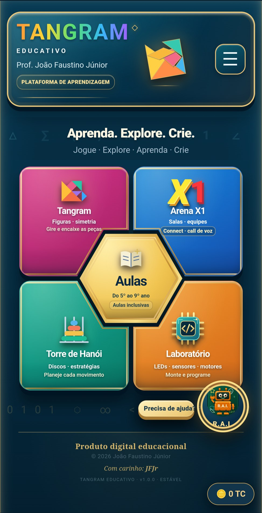
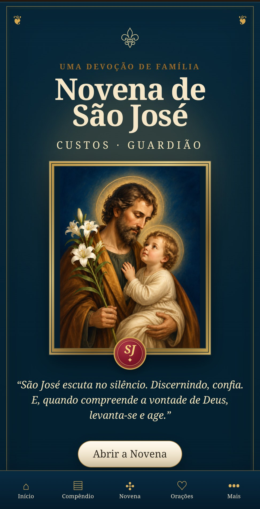
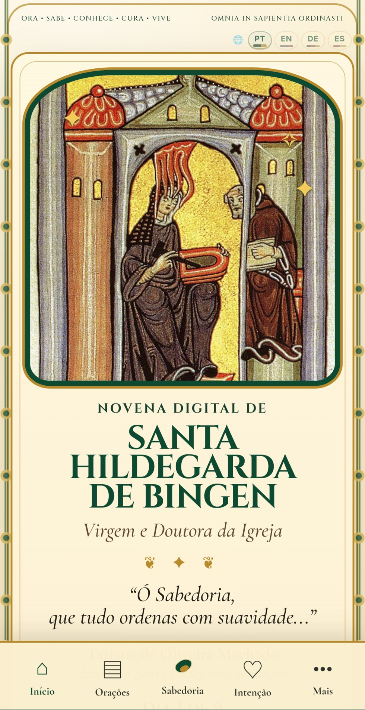
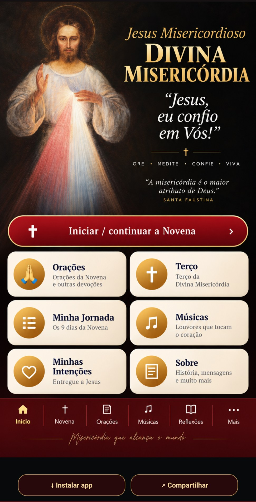
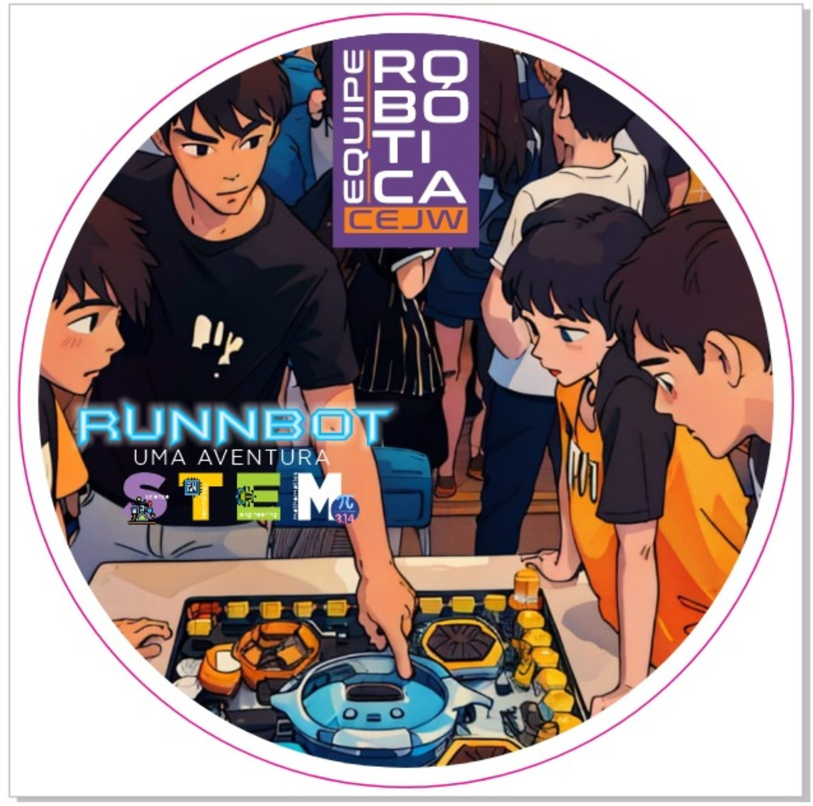
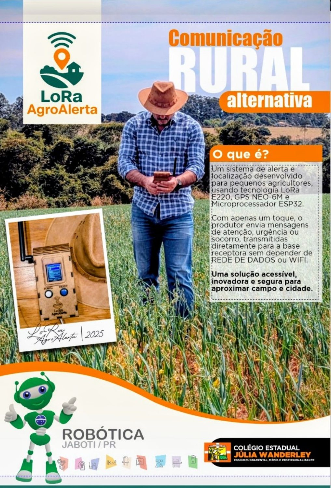
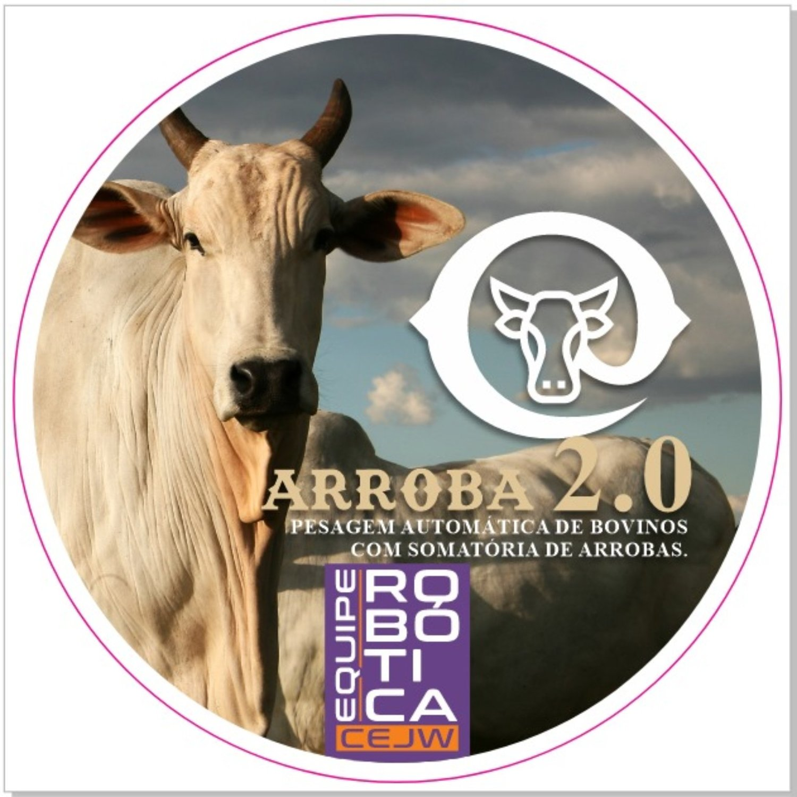
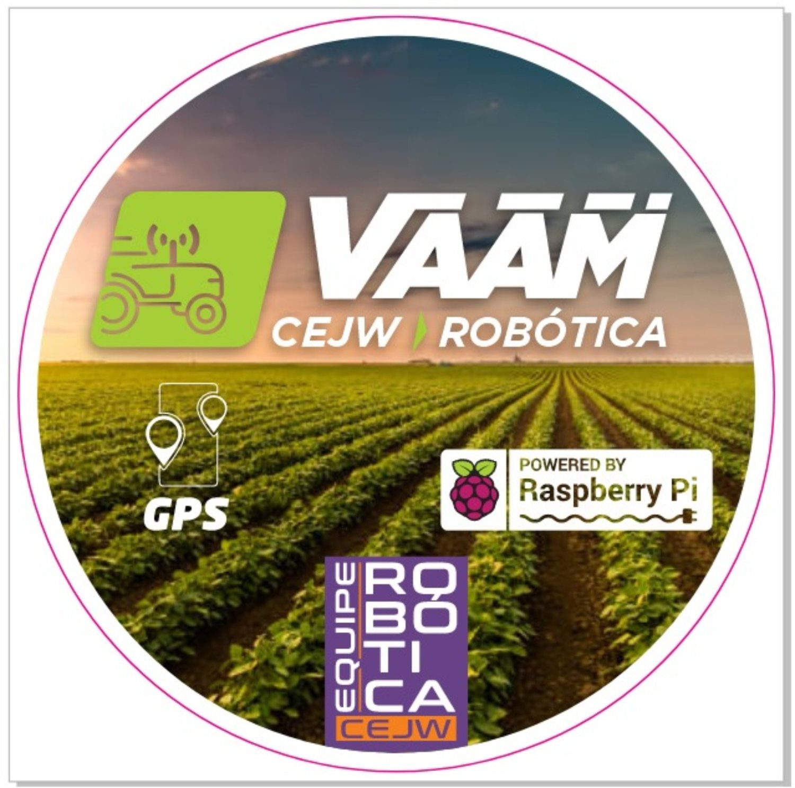
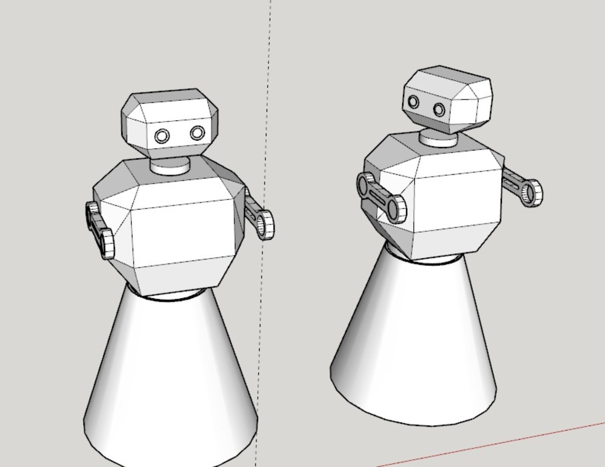

ACERVO DIGITAL
Downloads
Encontre e baixe os materiais publicados no portal.
Localizar arquivos
Arquivos disponíveis
Imagens originais verificadas no repositório. Para documentos e códigos, visite também o GitHub do autor ↗.
















